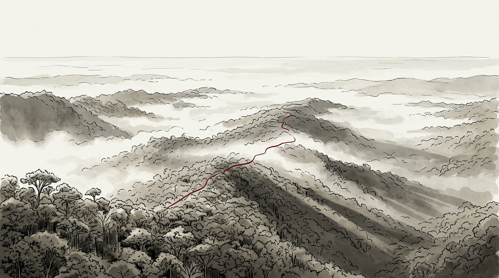

PLANO 1 · 0:00 - 0:35
El bosque Los Cedros desde arriba
0:00 / 6:42
Advertencia de honestidad intelectual: Las voces están interpretadas por actores y modeladas según la obra de los autores. Esta conversación nunca ocurrió en la vida real. Lo fiel es la posición filosófica de cada uno. Para citar formalmente en sus tareas, acuda al material escrito del bloque.
Guion Sincronizado
Reparto de Voces
K
Hans Kelsen (Praga, 1881)
Teoría Pura del Derecho: validez formal por competencia y procedimiento.
R
Gustav Radbruch (Lübeck, 1878)
Fórmula de Radbruch: la extrema injusticia no es Derecho.
M
Eduardo García Máynez (México, 1908)
Los cuatro criterios de la norma: bilateral, externa, heterónoma y coercible.